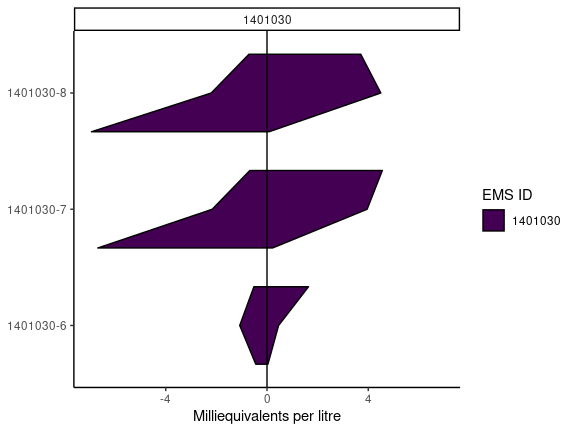

The goal of rems2aquachem is to provide a quick and painless way of converting EMS data into a format compatible with AquaChem.
Data is first downloaded with BC Govs rems package, then formatted for use by AquaChem.
Installation steps
Update RStudio (if it’s been a while)
Update R (if it’s been a while)
Open RStudio
-
Install
remotesIn the console type the following and hit enterinstall.packages("remotes") -
Update
remsIn the console type the following and hit enterremotes::install_github("bcgov/rems")Note: If you run into errors during the
Try the following:remsdata updates, this might be due to old rems caches.Uninstall
rems- RStudio, go to the lower right hand window, click on the “Packages” tab, in the search bar, search for “rems”, then click on the “X” in a circle to the right of it’s name.Remove the
remscache - Delete the cache folders by going to C:_USER(windows) or ~/Library/Application Support (mac) and delete the “rems” folderRe-install
remsremotes::install_github(“bcgov/rems”) and then try again
-
Install
rems2aquachemIn the console type the following and hit enter (be sure to install all updates if prompted!)remotes::install_github("bcgov/rems2aquachem")
If you run into errors right at the start, consider updating your packages.
remotes::update_packages()
Using rems2aquachem
Shiny GUI
-
In RStudio, first load the
rems2aquachempackage (this must be done every time)library(rems2aquachem) -
Next, launch the shiny GUI.
Type the following in the console and hit enter
ac_gui()
See the tutorial for a more in-depth look at the GUI

R command line
For advanced users, rems2aquachem can be used directly from R.
Downloads, converts and saves to csv
library(rems2aquachem)
r <- rems_to_aquachem(ems_ids = c("1401030", "1401377", "E292373"))
#> Checking for locally stored historical data...
#> Last download was 9 days ago
#> If you would like to update historical data, run 'rems::download_historic_data()'
#> Checking for locally stored recent data...
#> Fetching data from cache...
r
#> # A tibble: 16 x 170
#> Sample_Date SampleID Coord_Lat Project Coord_Long StationID Watertype Analysis_Date shortWatertype Comment
#> <chr> <chr> <chr> <chr> <chr> <chr> <chr> <chr> <chr> <chr>
#> 1 "" "" ° "" ° "" "" "" "" ""
#> 2 "1987-07-07" "1401030-… 49.2064 "BACKGRO… -119.8228 "075" "Fresh Wa… <NA> <NA> <NA>
#> 3 "1991-08-07" "1401030-… 49.2064 "BACKGRO… -119.8228 "075" "Fresh Wa… <NA> <NA> <NA>
#> 4 "1994-06-08" "1401030-… 49.2064 "BACKGRO… -119.8228 "075" "Fresh Wa… <NA> <NA> <NA>
#> 5 "2001-09-09" "1401030-… 49.2064 "BACKGRO… -119.8228 "075" "Fresh Wa… <NA> <NA> <NA>
#> 6 "2009-11-11" "1401030-… 49.2064 "BACKGRO… -119.8228 "075" "Fresh Wa… <NA> <NA> <NA>
#> 7 "2010-08-09" "1401030-… 49.2064 "BACKGRO… -119.8228 "075" "Fresh Wa… <NA> <NA> <NA>
#> 8 "2016-11-02" "1401030-… 49.2064 "BACKGRO… -119.8228 "075" "Fresh Wa… <NA> <NA> <NA>
#> 9 "2018-06-14" "1401030-… 49.2064 "BACKGRO… -119.8228 "075" "Ground W… <NA> <NA> <NA>
#> 10 "1987-07-07" "1401377-… 49.175 "BACKGRO… -119.7353 "203" "Fresh Wa… <NA> <NA> <NA>
#> 11 "1989-10-11" "1401377-… 49.175 "BACKGRO… -119.7353 "203" "Fresh Wa… <NA> <NA> <NA>
#> 12 "1994-03-24" "1401377-… 49.175 "BACKGRO… -119.7353 "203" "Fresh Wa… <NA> <NA> <NA>
#> 13 "2016-11-02" "1401377-… 49.175 "BACKGRO… -119.7353 "203" "Fresh Wa… <NA> <NA> <NA>
#> 14 "2020-06-29" "1401377-… 49.175 "BACKGRO… -119.7353 "203" "Ground W… <NA> <NA> <NA>
#> 15 "2015-03-06" "E292373-… 49.364604 "GROUNDW… -124.6141… "426" "Fresh Wa… <NA> <NA> <NA>
#> 16 "2017-10-11" "E292373-… 49.364604 "GROUNDW… -124.6141… "426" "Fresh Wa… <NA> <NA> <NA>
#> # … with 160 more variables: Reference <chr>, Quality_control <chr>, Duplicate_ID <chr>, Labcode <chr>,
#> # Location <chr>, Geology <chr>, X <chr>, Y <chr>, Elevation <chr>, Well_Depth <chr>, Screen_Top <chr>,
#> # Screen_Mid <chr>, Screen_Bottom <chr>, Gradient <chr>, Station_Comment <chr>, Sample_Depth <chr>, Temp <chr>,
#> # 14C <chr>, 18O <chr>, 2H <chr>, Ag_diss <chr>, Ag_tot <chr>, Al_diss <chr>, Al_tot <chr>, anion_sum <chr>,
#> # As_diss <chr>, As_tot <chr>, B <chr>, B_tot <chr>, Ba <chr>, Ba_tot <chr>, Benzene <chr>, Br <chr>, Ca <chr>,
#> # Ca_tot <chr>, cation_sum <chr>, Cd_diss <chr>, Cd_tot <chr>, charge_balance <chr>, Cl <chr>, CN_diss <chr>,
#> # CN_tot <chr>, Co_diss <chr>, Co_tot <chr>, CO3 <chr>, Cond <chr>, Cond_field <chr>, Cr_diss <chr>,
#> # Cr_III_diss <chr>, Cr_tot <chr>, Cr_VI_diss <chr>, Cu_diss <chr>, Cu_tot <chr>, Density <chr>, DO <chr>,
#> # Eh <chr>, Ethylbenzene <chr>, F <chr>, Fe_diss <chr>, Fe_II_diss <chr>, Fe_III_diss <chr>, Fe_tot <chr>,
#> # HCO3 <chr>, Hg_diss <chr>, Hg_tot <chr>, K <chr>, K_tot <chr>, Li <chr>, Li_tot <chr>, Meas_Alk <chr>,
#> # Meas_Hardness <chr>, Mg <chr>, Mg_tot <chr>, Mn_diss <chr>, Mn_tot <chr>, Mo_diss <chr>, Mo_tot <chr>,
#> # Na <chr>, Na_tot <chr>, NH4 <chr>, Ni_diss <chr>, Ni_tot <chr>, NO2 <chr>, NO3 <chr>, Pb_diss <chr>,
#> # Pb_tot <chr>, PCE <chr>, pH_field <chr>, pH_lab <chr>, Sb_diss <chr>, Sb_tot <chr>, Se_diss <chr>,
#> # Se_tot <chr>, Si <chr>, Si_tot <chr>, SO4 <chr>, Sr <chr>, Sr_tot <chr>, TCE <chr>, Tl_diss <chr>, …Create plots
piper_plot(r, ems_id = "1401030")
stiff_plot(r, ems_id = "1401030")
Vignette/Tutorials
See the rems2aquachem website
License
Copyright 2021 Province of British Columbia
Licensed under the Apache License, Version 2.0 (the “License”); you may not use this file except in compliance with the License. You may obtain a copy of the License at
http://www.apache.org/licenses/LICENSE-2.0
Unless required by applicable law or agreed to in writing, software distributed under the License is distributed on an “AS IS” BASIS, WITHOUT WARRANTIES OR CONDITIONS OF ANY KIND, either express or implied. See the License for the specific language governing permissions and limitations under the License.